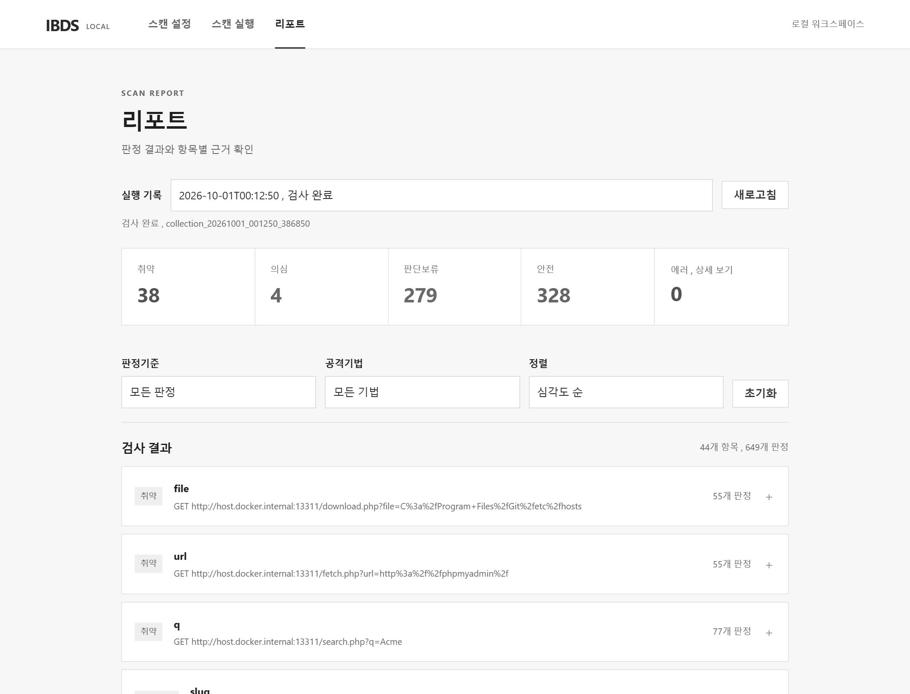
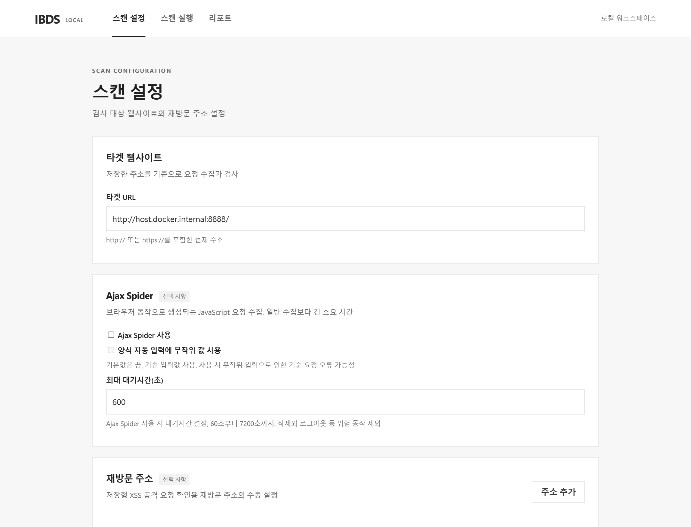
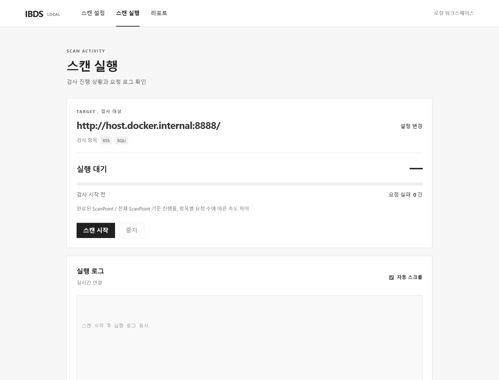

2026 정보보호학전공 졸업작품
ZAP API 기반
SQL Injection, XSS
동적 탐지 시스템
공격별 증거 검증과 검사 상태, 사유 코드 기록으로 판정 근거를 남기는 블랙박스 진단 도구
- 팀
- 그것이정보남
- 팀원
- 백서진, 박윤지, 정보남, 함근희
- 지도
- 이병천 교수
- 발표
- 2026.11.03

배경
2025년 개인정보 유출신고 46% 증가, 유출 원인의 62%가 해킹. 랜섬웨어와 웹 취약점 공격 증가세 연합뉴스, 2026.05.15
소스코드 없이 실행 중인 서비스를 점검하고, 공격 요청에 대한 응답과 동작으로 증거를 확인하기 위해 동적 분석(DAST) 방식 선택
진단 대상은 SQL Injection과 XSS. Injection은 OWASP Top 10:2025 5위 항목이며, 서버 응답 변화와 브라우저 실행 여부라는 서로 다른 방식으로 검증 가능
동작 과정
- 01수집Firefox 요청을 ZAP 프록시로 기록, Spider와 Ajax Spider 크롤링
- 02정규화범위 밖 요청, 로그아웃과 삭제 같은 위험 URL 제외. 같은 이름의 파라미터도 위치와 순서로 구분해 검사 지점 구성
- 03공격 선별입력값 반사 여부와 출력 문맥 분석, 조건에 맞지 않는 공격은 사유와 함께 제외
- 04공격 생성검사 지점마다 기준 요청 1회, SQLi 공격 6종, XSS 공격 14종
- 05전송ZAP API로 동일 로그인 세션 유지, GET과 HEAD만 재시도, POST 재전송 방지
- 06판정공격별 증거 확인, Firefox에서 XSS 실행 확인
- 07집계판정 근거, 진행 상태, 실패 사유 저장 후 웹 화면과 PDF 보고서로 출력
사용 화면




판정 방식
SQL Injection
| 방식 | 확인 내용 | 판정 조건 |
|---|---|---|
| 참거짓 기반 | 참과 거짓 조건의 응답 내용 비교 | 응답 차이 2쌍 이상, 재현 확인 |
| 시간 지연 기반 | 지연 구문 전후 응답 시간 비교 | 2.5초 이상 지연 2회 이상 |
| 오류 기반 | 응답 속 DB 오류 문구 | DB 관련 값 추출 |
XSS
| 유형 | 확인 경로 | 판정 조건 |
|---|---|---|
| Reflected | 공격 응답을 브라우저에서 재렌더링 | 토큰 경고창 확인 |
| Stored | 저장 후 재조회한 화면을 브라우저에서 확인 | 저장 확인, 토큰 실행 |
| DOM | 세션 쿠키를 유지한 채 실제 URL로 이동 | 토큰 경고창 확인 |
결과 기록
취약 여부와 검사 완료 여부를 따로 기록. 요청 실패나 미완료 검사를 미탐지로 처리하지 않기 위한 구분
- 취약 가능성 높음
- 공격 실행, SQLi 재현 또는 값 추출 확인
- 취약 신호 관찰
- 반사 또는 오류 신호 확인
- 공격 근거 미확인
- 검사 완료 후 근거 없음
- 검토 필요
- 검사 미완료, 사유 코드 기록
- 완료
- 모든 시도 정상 종료
- 부분 완료
- 일부 시도 또는 검증 단계 미완료
- 실패
- 모든 시도의 요청 전송 실패
- 미실행
- 중단 또는 선행 단계 실패로 미전송
테스트 환경
| 대상 | 용도 | 규모 |
|---|---|---|
| OWASP Benchmark 1.2 | 정답표 기반 정량 평가 | SQLi 504건, XSS 455건 |
| 자체 테스트 사이트 | PHP, MySQL 게시판 | SQLi 8곳, XSS 7곳 |
| DVWA | 저장형 재조회 등 동작 검증 | |
| WackoPicko | 다양한 입력과 공격 경로 검증 |
한계와 향후 과제
| 한계 | 향후 과제 |
|---|---|
| 쿠키, 헤더 입력 미검사 | 입력 경로 확장 |
| JSON, multipart 본문 미지원 | 요청 형식 확장 |
| 수집되지 않은 페이지와 입력 지점은 검사 불가 | 수집 범위 확대 |
| 외부 스크립트 의존 XSS의 실행 확인 한계 | 재조회 경로와 브라우저 검증 보완 |
| 시간 지연 SQLi의 네트워크 지연 영향 | 미탐, 미완료 사례 분석으로 규칙 개선 |
기술 스택
- 수집
- OWASP ZAP 2.17 (Docker, API 모드)
- 판정
- Python 3.13, python-owasp-zap-v2.4, Playwright (Firefox), BeautifulSoup4
- 화면
- FastAPI, Uvicorn, JavaScript
- 환경 설정
- PowerShell 스크립트로 ZAP 이미지, 인증서 배포, 프록시 설정 자동화